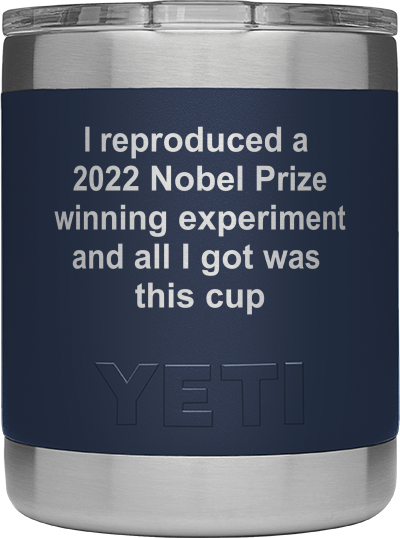
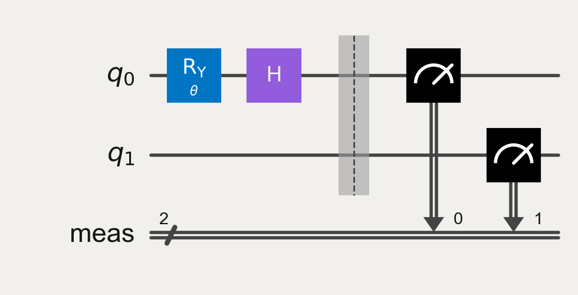
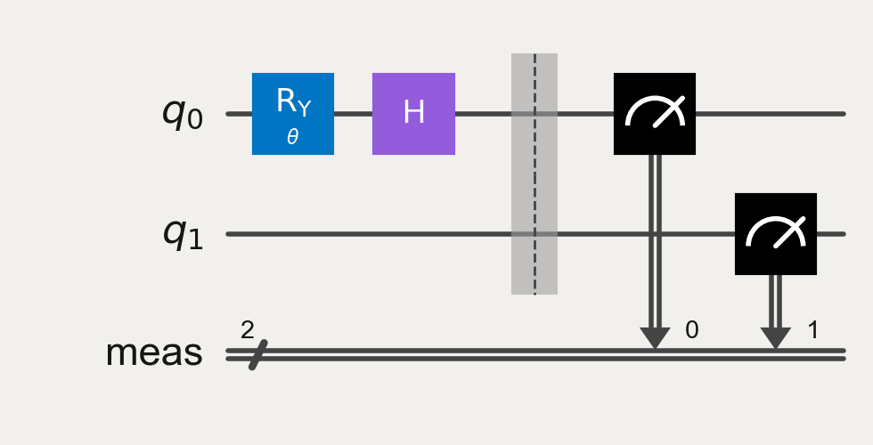
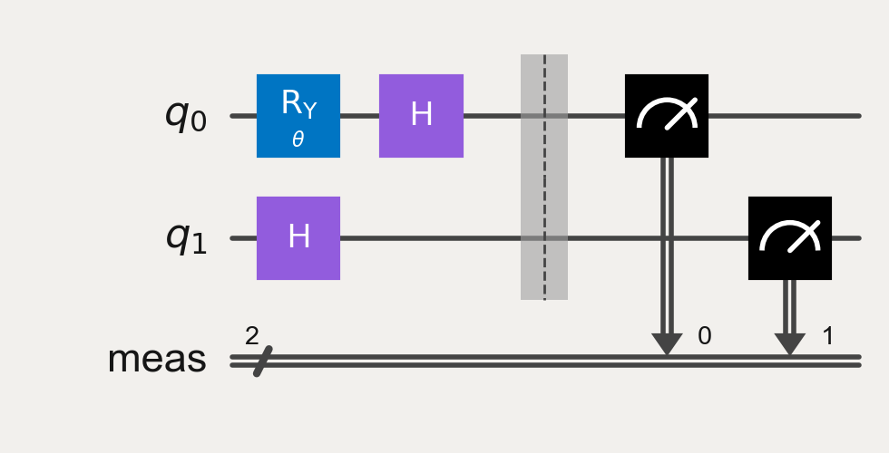
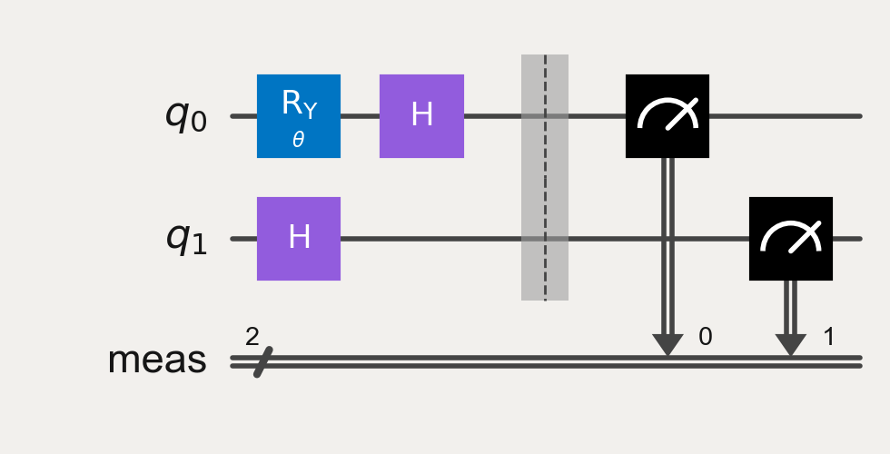

Quantum Practitioners Forum 2022: CHSH Distance Challenge#
The challenge#
The goal of this challenge is to entangle a pair of qubits, as far away as possible (to be defined below) from the other and still recover a CHSH violation. How best to generate long-range entanglement an interesting challenge, and there are multiple possible techniques, some introduced in the Quantum Practitioners Forum, that might help in this process. Other tools might also help increase the fidelity of the final CHSH signal.
How you will be judged#
Participants are tasked with generating long-range entanglement on real quantum hardware through the generation of Bell states such that measurements on qubits in the Bell pair are as distant as possible while still recovering a signal that shows a CHSH violation. Here distance is defined to be the shortest path connecting qubits on a graph of the systems coupling_map:

Here is the distance between Q1 and Q23 is 8 (blue), NOT 12 (red)
The person who generates entanglement the farthest, and measures the largest CHSH violation is the winner. The primary value of interest will be the distance, and two or more participants with the same distance will be ranked by magnitude of the observed CHSH violation. Here a CHSH violation is a value with magnitude \(>2\) (see the example code below for details). CHSH values less than this will not count, i.e. are not quantum.
Obviously the larger the system the better for distance, but these same systems usually have larger error rates leading to difficulties with measuring a large enough CHSH value. On any given system there is also usually more than one way to get from A->B, so the path matters. There are some other tricks as well that can help here.
What you need to show#
Participants must present their work in Jupyter notebook form.
The notebook must clearly show the users work, and highlight the distance and CHSH value that the user wishes to have scored. Ideally a plot (like shown below) would also be provided.
Please make sure the
job_id(s) is shown in case there are any disputes.
How to submit#
Please submit your notebook to
paul.nation@ibm.comwith the email title “QPF-2022 Submission”
Deadline#
All submissions must be made by Dec. 10th 2022 at midnight EST.
Prize#
Top three scores (distance & CHSH value) will receive a limited-edition (there are only 4) Yeti cup:
Background#
Alain Aspect, John Clauser and Anton Zeilinger
This years Nobel Prize for Physics was awarded to Alain Aspect, John Clauser and Anton Zeilinger, for their pioneering work in quantum information science, and in particular their experiments with entangled photons demonstrating violation of Bell’s inequalities. An experimental method by which one can test Bell’s inequality was put forth by Clauser, Horne, Shimony, and Holt (CHSH) in 1969. A few years later polarization correlations in photon pairs from Calcium atoms was observed: Stuart J. Freedman and John F. Clauser Phys. Rev. Lett. 28, 938 (1972), although this experiment suffered from a number of loopholes. These loopholes were removed in subsequent works by Aspect et al and Zeilinger et al.
Of particular interest is the “locality” loophole, where measurements of each photon in an entangled pair must be space-like separated; there is no classical signal that could be sent at the speed of light from one detector to the other to influence the detection process. On a superconducting processor such as those from IBM Quantum, there is no way around the locality loophole any time in the near future as the distances on super conducting chips is of the order of centimeters, and the speed of light (even in metal) is tens of millions of meters per second. However, nothing says we can’t try! Generating non-local entangled states is a fun, and challenging exercise. This makes it fun for a mini-challenge.
An example distance=12 violation#
Here is an example of CHSH violation out to distance=12. This was done with minimal effort, save for knowing which system to try it on. One should be able to do better than this with a bit of effort. The code for generating plots like this is given below

CHSH code#
The CHSH problem has already been explained and coded up in the Qiskit Textbook and the Qiskit Runtime tutorials. Below is example code that can be used as a starting point. Additional information can be found in the above references.
Imports#
import numpy as np
from qiskit.circuit import Parameter
from qiskit import QuantumCircuit, transpile
from qiskit.result import sampled_expectation_value
from qiskit_aer import AerSimulator
import matplotlib.pyplot as plt
try:
plt.style.use('quantum-light')
except: pass
%config InlineBackend.figure_format='retina'
Circuit creation#
We first need an entanglement resource such as one of the Bell states.
bell_state = QuantumCircuit(2)
bell_state.h(0)
bell_state.cx(0, 1)
bell_state.draw('mpl')
Here we create a set of parameterized circuits for varying the measurement basis on Q0:
num_phases = 21
phase_array = np.linspace(0, 2*np.pi, num_phases)
phases = [[ph] for ph in phase_array]
We will then create the set of basis measurements needed to generate a CHSH violation. Here we create the necessary circuits with the necessary single-qubit rotation operators, and basis change operator ry:
# Circuit order is ZZ, ZX, XZ, XX
theta = Parameter('$\\theta$')
meas_circuits = []
for basis in ['ZZ', 'ZX', 'XZ', 'XX']:
qc = QuantumCircuit(2)
qc.ry(theta, 0)
for idx, oper in enumerate(basis[::-1]):
if oper == 'X':
qc.h(idx)
qc.measure_all()
meas_circuits.append(qc)
Here we draw them for completeness:
for circ in meas_circuits:
display(circ.draw('mpl'))
 

 

Next we need to append our measurement circuits onto our Bell state:
chsh_with_meas = [bell_state.compose(circ, inplace=False) for circ in meas_circuits]
for circ in chsh_with_meas:
display(circ.draw('mpl'))
Simulation#
We are going to need a set of circuits for each phase angle in the phase_array
circs = [chsh_with_meas]*phase_array.shape[0]
We can now bind our phase angles to the circuits:
bound_circs = []
for circ in chsh_with_meas:
bound_circs.extend([circ.bind_parameters(ph) for ph in phases])
And finally simulate the circuits and extract the results:
sim = AerSimulator()
counts = sim.run(bound_circs, shots=int(1e4)).result().get_counts()
res = [counts[kk*num_phases:num_phases*(kk+1)] for kk in range(4)]
CHSH violations are in the form of an inequality that, after applying the post-rotation operators, is just the 2-qubit ZZ expectation value:
arrs = [np.array([sampled_expectation_value(cnts, 'ZZ') for cnts in item]) for item in res]
The two forms of CHSH value are given as:
chsh1 = arrs[0]-arrs[1]+arrs[2]+arrs[3]
chsh2 = arrs[0]+arrs[1]-arrs[2]+arrs[3]
Plot the results#
Violation occurs when the magnitude of these CHSH values is \(>2\).
fig, ax = plt.subplots()
ax.plot(phase_array, chsh1, '-', label='CHSH-1')
ax.plot(phase_array, chsh2, '-', label='CHSH-2')
ax.axhline(2, linestyle='dashed', lw=2, zorder=2, color='0.3')
ax.axhline(2*np.sqrt(2), linestyle='solid', lw=2, zorder=2, color='0.3')
ax.axhline(-2, linestyle='dashed', lw=2, zorder=2, color='0.3')
ax.axhline(-2*np.sqrt(2), linestyle='solid', lw=2, zorder=2, color='0.3')
ax.fill_between(phase_array, 2, 2*np.sqrt(2), color='0.7', alpha=0.75, zorder=1)
ax.fill_between(phase_array, -2, -2*np.sqrt(2), color='0.7', alpha=0.75, zorder=1)
ax.set_xlabel('Phase ($\\theta$)');